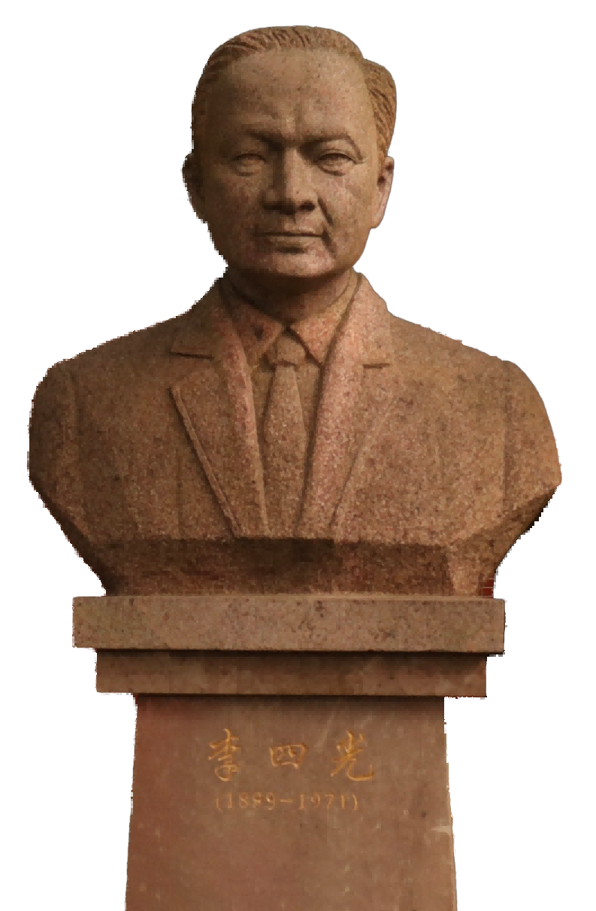
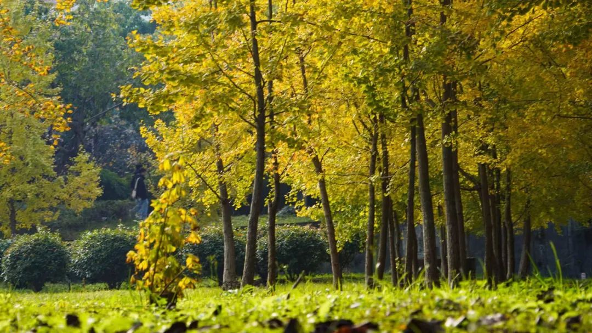
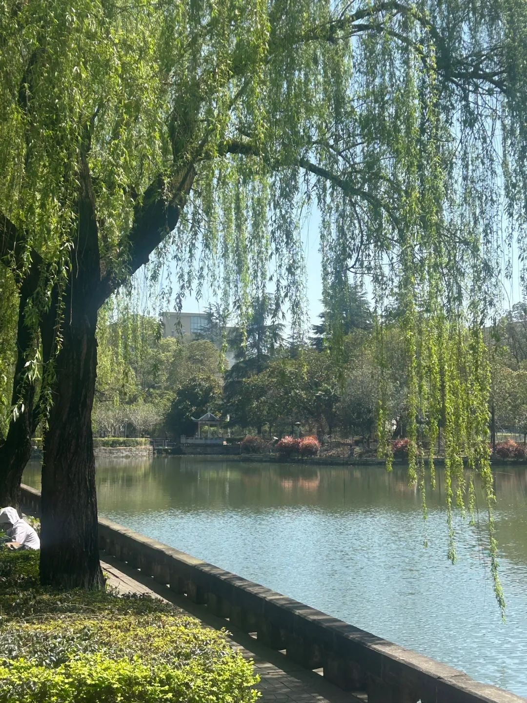
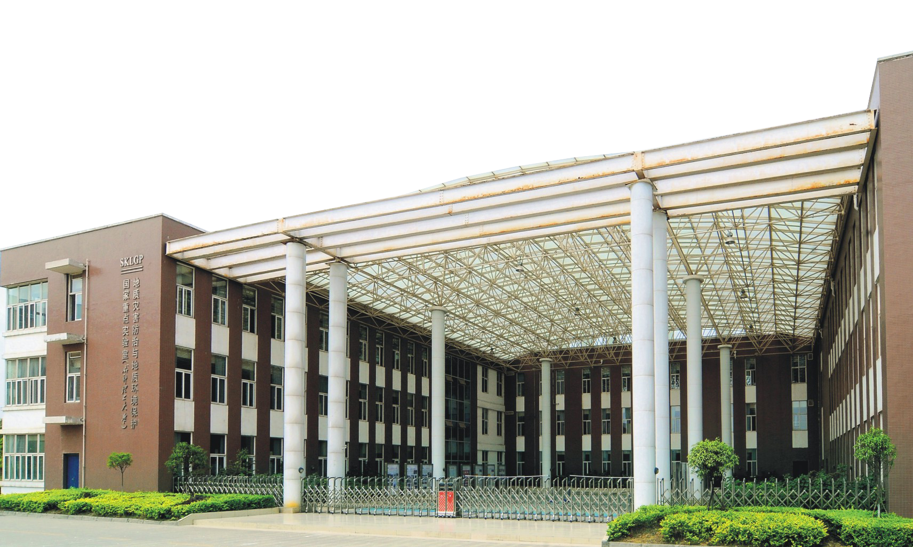
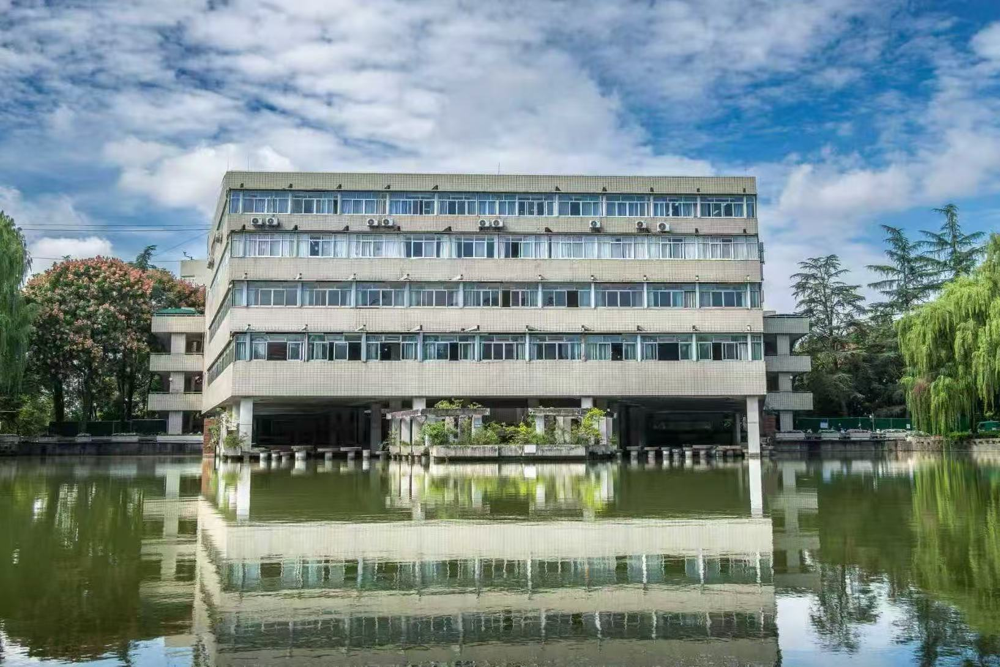

从地质起步
承续地质办学传统，把学科根脉扎进祖国大地。

1956 - 2026

以红金为礼，沿着时间、山海与校园记忆，走进成都理工大学70周年互动纪念馆。
History
点击年份，展开一段校史记忆。
Geology
地质底色，是成理最鲜明的精神坐标。

从地质勘探起步，服务国家资源能源、防灾减灾与生态文明建设。
承续地质办学传统，把学科根脉扎进祖国大地。
面向资源能源、地质环境与防灾减灾，探索山川深处的答案。
立足学科优势，服务国家战略、区域发展与生态文明建设。
Memory
砚湖、银杏、亭台与教学楼，都是成理人的青春注脚。





Blessing
输入你的信息，生成一张70周年纪念祝福卡。


祝成都理工大学建校70周年快乐！愿成理薪火相传，桃李芬芳，再攀高峰。